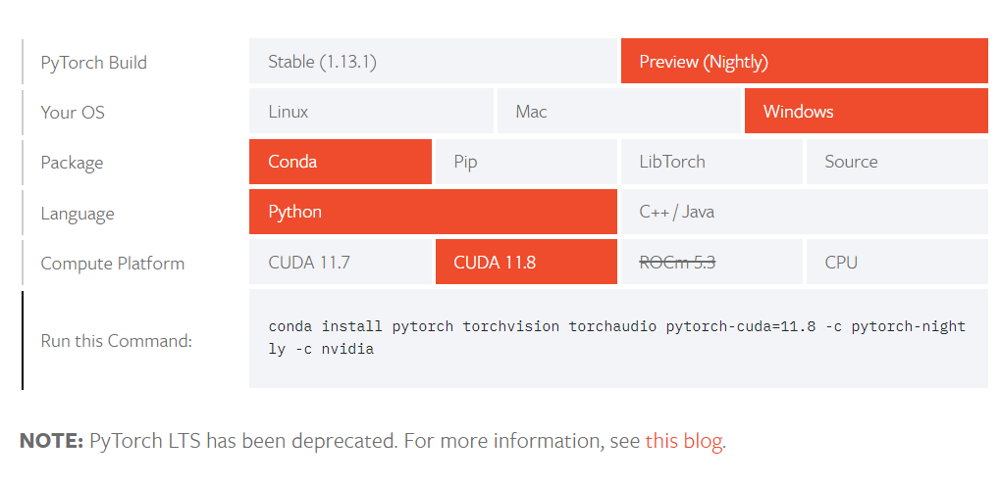

[Pytorch] 想用GPU跑ML環境卻裝不好?看完這篇帶你避開各種雷!
前言
前陣子想說要來玩看看ML，一開始好傻好天真的以為pip install pytorch就好了，
殊不知還要裝CUDA，還要對照顯卡版本、驅動、Python版本等等…
前前後後環境裝了又刪、刪了又裝，但下面的指令一直出現…
torch.cuda.is_available()
False
正文
重點有三個
- 顯卡及CUDA版本
- Python版本
- Pytorch版本
這三點非常重要他們有一項不對就裝不好!
顯卡及CUDA版本
先打開powershell輸入: nvidia-smi
nvidia-smi
+-----------------------------------------------------------------------------+
| NVIDIA-SMI 528.33 Driver Version: 528.33 CUDA Version: 12.0 |
|-------------------------------+----------------------+----------------------+
| GPU Name TCC/WDDM | Bus-Id Disp.A | Volatile Uncorr. ECC |
| Fan Temp Perf Pwr:Usage/Cap| Memory-Usage | GPU-Util Compute M. |
| | | MIG M. |
|===============================+======================+======================|
| 0 Quadro M1000M WDDM | 00000000:01:00.0 Off | N/A |
| N/A 0C P0 N/A / N/A | 0MiB / 2048MiB | 0% Default |
| | | N/A |
+-------------------------------+----------------------+----------------------+
+-----------------------------------------------------------------------------+
| Processes: |
| GPU GI CI PID Type Process name GPU Memory |
| ID ID Usage |
|=============================================================================|
| No running processes found |
+-----------------------------------------------------------------------------+
最上面可以看到我的顯卡驅動是528.33，支援的CUDA到12版
這邊很重要的
千萬不要看到支援到12版就去載CUDA 12，因為Pytorch目前還不支援
Pytorch可以看到目前最高支援CUDA 11.8, CUDNN 8.7.0.84
所以現在可以得到一個結論，顯卡基本上是向下相容的，所以你可以去安裝CUDA11.X，甚至CUDA10.X都可以，取決於你想裝哪一版Pytorch
但假如你的顯卡CUDA只支援到10，那當然你就只能裝<=10的CUDA版本
終端機輸入:nvcc –version 可以查詢CUDA版本
nvcc --version
nvcc: NVIDIA (R) Cuda compiler driver
Copyright (c) 2005-2022 NVIDIA Corporation
Built on Wed_Sep_21_10:41:10_Pacific_Daylight_Time_2022
Cuda compilation tools, release 11.8, V11.8.89
Build cuda_11.8.r11.8/compiler.31833905_0
至於安裝CUDA的流程可以參考:https://medium.com/ching-i/win10-%E5%AE%89%E8%A3%9D-cuda-cudnn-%E6%95%99%E5%AD%B8-c617b3b76deb
假如有需要切換版本可以參考:https://cvfiasd.pixnet.net/blog/post/175311141-caffe%E5%92%8Ctensorflow%E5%85%B1%E5%AD%98%28%E5%A4%9A%E7%89%88%E6%9C%ACcuda%E5%88%87%E6%8F%9B%29
Python版本
上圖可見CUDA 11.8對應的Pytorch是2.0，所以對照的Python版本是>=3.8, <=3.11
python -V
Python 3.10.8
我電腦 Python 3.10.8 所以沒問題
Pytorch版本
Pytorch首頁可以照自己規格點選然後會產生安裝指令
這邊我是用conda安裝的所以選conda，另外Compute Platform這裡要選跟你剛剛裝一樣版本的CUDA
因為只要選錯版本安裝時他就會自動裝成CPU版
另外比較舊的Pytorch版本可點進去找自己要的安裝
測試
最後安裝完後打開conda進入剛剛安裝的環境
python
Python 3.10.9 | packaged by conda-forge | (main, Jan 11 2023, 15:15:40) [MSC v.1916 64 bit (AMD64)] on win32
Type "help", "copyright", "credits" or "license" for more information.
>>> import torch
>>> torch.cuda.is_available()
True